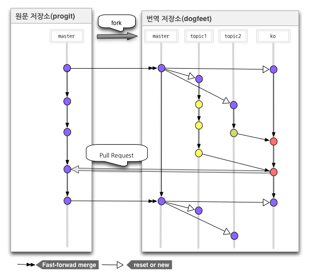

<!doctype html>
<html lang="ko">

	<head>
		<meta charset="utf-8">

		<title>Git For Translation</title>

		<meta name="description" content="사용중인 Subversion 저장소를 Git으로 옮기는 방법을 단계별로 설명한다.">
		<meta name="author" content="mEye">

		<meta name="apple-mobile-web-app-capable" content="yes" />
		<meta name="apple-mobile-web-app-status-bar-style" content="black-translucent" />

		<meta name="viewport" content="width=device-width, initial-scale=1.0, maximum-scale=1.0, user-scalable=no">

		<link rel="stylesheet" href="css/reveal.min.css">
		<link rel="stylesheet" href="css/theme/night.css" id="theme">

		<!-- For syntax highlighting -->
		<link rel="stylesheet" href="lib/css/zenburn.css">

		<!-- If the query includes 'print-pdf', include the PDF print sheet -->
		<script>
			if( window.location.search.match( /print-pdf/gi ) ) {
				var link = document.createElement( 'link' );
				link.rel = 'stylesheet';
				link.type = 'text/css';
				link.href = 'css/print/pdf.css';
				document.getElementsByTagName( 'head' )[0].appendChild( link );
			}
		</script>

		<!--[if lt IE 9]>
		<script src="lib/js/html5shiv.js"></script>
		<![endif]-->
	</head>

	<body>

		<div class="reveal">

			<!-- Any section element inside of this container is displayed as a slide -->
			<div class="slides">
                <section data-background="#555" data-markdown>
                    <script type="text/template">
## 번역을 위한 Git 사용

2015\. 4\. 8

mEye
                    </script>
                </section>
				<section data-background="#333" data-markdown>
                    <script type="text/template">
## 필요한 것?

1. 작업 흐름<!-- .element: class="fragment" data-fragment-index="1" -->
2. 규칙<!-- .element: class="fragment" data-fragment-index="1" -->
3. ...에 따른 도구 사용법<!-- .element: class="fragment" data-fragment-index="2" -->
                    </script>
                </section>
                <section data-markdown>
                    <script type="text/template">
## 1. 작업 흐름 - Pro Git 번역

- master
- topic#
- ko
- ko-build
- ko-base
- private
                    </script>
                </section>
                <section data-markdown>
                    <script type="text/template">
## 1. 작업 흐름 - Pro Git 번역 (cont.)

Pro Git 번역 Workflow

<figure>
	
    <figcaption>[#dogfeet - Git:번역 Workflow](http://dogfeet.github.io/articles/2012/git-translate-flow.html)</figcaption>
</figure>
                    </script>
                </section>
                <section data-markdown>
                    <script type="text/template">
## But,

[PHP The Right Way 한국어판](https://github.com/ModernPUG/php-the-right-way)은 저런 Workflow 사용 불가능!
                    </script>
                </section>
                <section>
					<section data-markdown>
                        <script type="text/template">
## 1. 작업 흐름 - 제안 1

ModernPUG/php-the-right-way

> - gh-pages

USERNAME/php-the-right-way (forked)

> - gh-pages
> - ko-base
> - upstream-ko -> ModernPUG/php-the-right-way
> - upstream-en -> codeguy/php-the-right-way
> - topic#
                        </script>
                    </section>
					<section data-markdown>
						<script type="text/template">
## 1. 작업 흐름 - 제안 2

ModernPUG/php-the-right-way

> - gh-pages
> - ko-base
						</script>
					</section>
                </section>
                <section>
					<section data-markdown>
                    	<script type="text/template">
## 1. 작업 흐름 - 해보기

```bash
(fork)
git clone git@github.com:USERNAME/php-the-right-way.git
git remote add upstream-ko https://github.com/ModernPUG/php-the-right-way.git
git fetch upstream-ko
git checkout gh-pages
git merge upstream-ko/gh-pages
```
                    	</script>
	                </section>
					<section data-markdown>
                    	<script type="text/template">
## 1. 작업 흐름 - 해보기 (cont.)

```bash
git checkout --orphan ko-base
git rm -rf .
git remote add upstream-en https://github.com/codeguy/php-the-right-way.git
git fetch upstream-en
git merge upstream-en/gh-pages
```
                    	</script>
	                </section>
					<section data-markdown>
                    	<script type="text/template">
## 1. 작업 흐름 - 해보기 (cont.)

```bash
git checkout gh-pages
git fetch upstream-ko
git merge upstream-ko/gh-pages

git checkout ko-base
git fetch upstream-en
git merge upstream-en/gh-pages

git diff upstream-en/gh-pages ko-base
```
                    	</script>
	                </section>
				</section>
				<section data-markdown>
					<script type="text/template">
## 2. 규칙

- 번역시 이슈 생성
- 번역 검수
- 머지 정책
- 등등...

참고 : [Vim 한글화 일러두기](https://github.com/vim-ko/vim-ko/blob/master/README.mkd)
					</script>
				</section>
				<section data-markdown>
					<script type="text/template">
## 3. 익혀야할 것 - Git

- branch
- merge
- pull request
- 기타...

참고 : [Git 브랜치 배우기](http://learnbranch.urigit.com/)
					</script>
				</section>
                <!-- <section data-markdown="data.md" data-seperator="^\n\n\n" data-vertical="^\n\n" data-nodes="^Note:" data-charset="utf-8"></section> -->

			</div>

		</div>

		<script src="lib/js/head.min.js"></script>
		<script src="js/reveal.min.js"></script>

		<script>

			// Full list of configuration options available here:
			// https://github.com/hakimel/reveal.js#configuration
			Reveal.initialize({
				controls: true,
				progress: true,
				history: true,
				center: true,

				theme: Reveal.getQueryHash().theme, // available themes are in /css/theme
				transition: Reveal.getQueryHash().transition || 'default', // default/cube/page/concave/zoom/linear/fade/none

				// Parallax scrolling
				// parallaxBackgroundImage: 'https://s3.amazonaws.com/hakim-static/reveal-js/reveal-parallax-1.jpg',
				// parallaxBackgroundSize: '2100px 900px',

				// Optional libraries used to extend on reveal.js
				dependencies: [
					{ src: 'lib/js/classList.js', condition: function() { return !document.body.classList; } },
					{ src: 'plugin/markdown/marked.js', condition: function() { return !!document.querySelector( '[data-markdown]' ); } },
					{ src: 'plugin/markdown/markdown.js', condition: function() { return !!document.querySelector( '[data-markdown]' ); } },
					{ src: 'plugin/highlight/highlight.js', async: true, callback: function() { hljs.initHighlightingOnLoad(); } },
					{ src: 'plugin/zoom-js/zoom.js', async: true, condition: function() { return !!document.body.classList; } },
					{ src: 'plugin/notes/notes.js', async: true, condition: function() { return !!document.body.classList; } }
				]
			});

		</script>

	</body>
</html>
